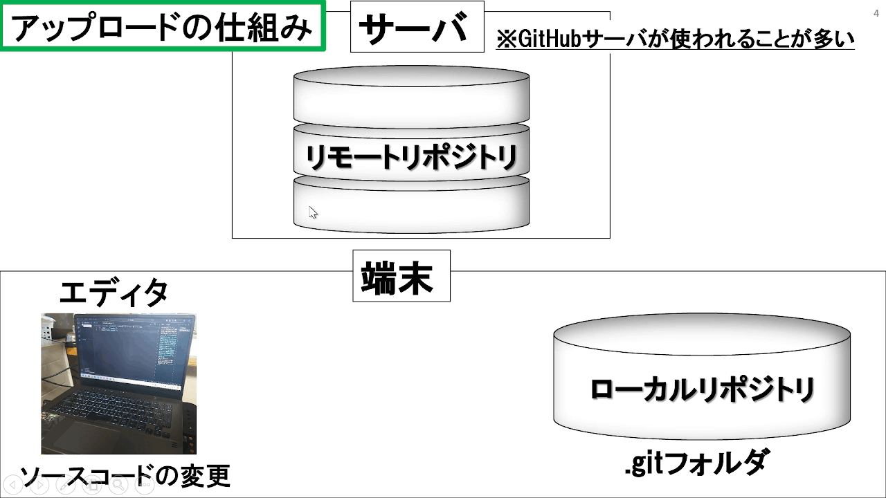
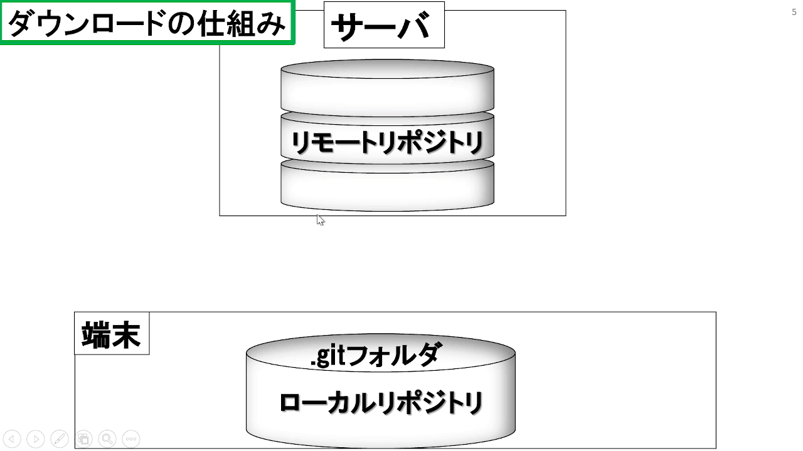

用語
| 用語 | 説明 |
|---|---|
| Git | 分散型バージョン管理システム |
| GitHub | Git を利用したWebアプリケーション |
| 項目 | 正式名称 | 位置づけ | 役割・目的 | 主な作業 | トリガー | 本番反映の判断 | 成果物 | 他ツールとの関係 |
|---|---|---|---|---|---|---|---|---|
| Git | Git | バージョン管理ツール | 変更履歴の記録 |
(継続的インテグレーション) | 開発・リリースの自動化手法 |
(継続的デリバリー) | 開発・リリースの自動化手法 | 常にリリース可能な状態を保つ |
(継続的デプロイ) | 開発・リリースの自動化手法 | 変更を自動で本番環境まで反映する |
### 開発フロー | 順序 | 段階 | 操作 | 担当 | GitHub の機能 | 結果 | 補足 | |---|---|---|---|---|---|---| | 1 | ソース管理 | feature ブランチで開発し push | 開発者 |
- commit
- branch
- merge
- CI/CD のトリガー元
- push
- merge
- 共同開発の場
- CI/CD 実行基盤 (GitHub Actions) の提供
- Pull Request
- コードレビュー
- Actions の実行
- リポジトリ
- Actions の実行結果
(継続的インテグレーション) | 開発・リリースの自動化手法 |
- コード変更を頻繁に統合する
- 早期に問題を検出する
- ビルド
- 単体テスト
- 静的解析
- Lint
- push
- Pull Request
- テスト結果
- ビルド成果物
- GitHub Actions で実現
- GitHub 以外でも実現可能
- Jenkins
- GitLab CI
- CircleCI
(継続的デリバリー) | 開発・リリースの自動化手法 | 常にリリース可能な状態を保つ |
- ステージング環境へのデプロイ
- 結合テスト
- リリース成果物の作成
- リリース候補
- パッケージ
- コンテナイメージ
- GitHub Actions + Environments で実現
- GitHub 以外でも実現可能
(継続的デプロイ) | 開発・リリースの自動化手法 | 変更を自動で本番環境まで反映する |
- 本番環境へのデプロイ
- ヘルスチェック
- ロールバック
- GitHub Actions + Environments で実現
- GitHub 以外でも実現可能
### 開発フロー | 順序 | 段階 | 操作 | 担当 | GitHub の機能 | 結果 | 補足 | |---|---|---|---|---|---|---| | 1 | ソース管理 | feature ブランチで開発し push | 開発者 |
- リポジトリ
- ブランチ
- コミット
- ビルド
- テスト
- Lint
.github/workflows/*.yml で定義 |
| 4 | セキュリティ検査 | - 脆弱性の検出
- 秘密情報の検出
- Dependabot
- Code scanning
- Secret scanning
- Branch protection rules
- Required status checks
- GitHub Packages
- Artifacts
- Releases
- Environments
- Secrets
- Variables
- OIDC
- クラウドと連携
- AWS
- Azure
- GCP
gitコマンドの使い方

Install
設定
ユーザ登録
git config --global user.name [名前]
git config --global user.email [メールアドレス]確認
- Windows
-
git config --list | findstr "user.name" git config --list | findstr "user.email" - Linux
-
git config --list | grep "user.name" git config --list | grep "user.email"
Alias設定
git config --global alias.[新たに設定したいコマンド名] [gitコマンド]git [新たに設定したいコマンド名]を打つとgit [gitコマンド]が実行される
ローカルリポジトリの状態を確認する
git statusログの確認
git log
git log - [確認したいログの数]リポジトリ操作
リポジトリの設定
ローカルリポジトリの作成
git init- .gitという隠しフォルダが生成される(このディレクトリ内での作業が可能になる)
リモートリポジトリの指定
git remote add origin [リポジトリのURL]メインブランチを指定
git branch -M mainアップロード

アップロードするファイルを指定
git add [ファイル名, ディレクトリ名, -A:全て] ":![除外したいファイル名/ディレクトリ名]" ":![除外したいファイル名2/ディレクトリ名2]"ローカルリポジトリにコミット
git commit -m "コメント"リモートリポジトリにプッシュ
git push -u origin main // 初回のみ (競合解決)
git push
git push -f //強制push-
-u: --set-upstream - ローカルブランチの上流が [ブランチ名] へ移る
ダウンロード

clone
- リモートリポジトリ上の全てのファイルがダウンロードされる
git clone [リポジトリのURL]pull
- 更新されているリモートリポジトリのファイルをローカルリポジトリにダウンロード
git pull origin [ブランチ名] // 初回のみ
git pullファイル復元
git restore [ファイル名, ディレクトリ名]状態の取り消し
ステージングエリアに保管されているファイルの取り消し
git restore --staged [取り消したいファイル・フォルダ名]add 取り消し
git resetcommit メッセージの変更
git commit --amend -m "RENAME"commit 取り消し
git reset --soft HEAD~1add & commit 取り消し
git reset HEAD~1プッシュを取り消す
git reset --hard [取り消すプッシュの直前のコミットハッシュ値] [取り消すプッシュの直前のコミットハッシュ値] : git logで確認
プッシュを打ち消す(履歴を残しながら戻す)
git revert [取り消すプッシュの直前のコミットハッシュ値]..HEAD [取り消すプッシュの直前のコミットハッシュ値] : git logで確認
ブランチ操作
ブランチ確認
git branch -aブランチ作成・移動
git switch -c [新しいブランチ名, 移動先ブランチ名]ブランチの移動
git switch [切り替え先のブランチ名]ブランチ合成
git merge [併合したいブランチ]
git merge --allow-unrelated-histories //履歴の異なるブランチを合成することを許可する[併合したいブランチ]が合成される
ブランチ名変更
git branch -m [元のブランチ名] [変更したブランチ名]ブランチのマージ
- 1. 併合先のブランチへ移動
-
git switch [併合先ブランチ] - 2. ブランチを併合
-
git merge --allow-unrelated-histories [併合元のブランチ] - 3. 混乱しないように、併合元のブランチを削除(推奨)
ローカルブランチ削除
git branch -d [削除したいブランチ] // 変更をマージした後実行可能
git branch -D [過去の変更まで完全削除したいブランチ]リモートリポジトリのブランチを削除
git push origin --delete [削除したいブランチ名]マージの取り消し
git merge --abort履歴を別ブランチに移し、最新の状態のみ保持したmainブランチを作成する(初回のみ)
- 1. 現在のmainブランチをarchiveブランチにリネームする
-
git branch -m main archive - 2. 履歴なしの新しいmainブランチを作成し、現在のファイルをコミットする
-
git checkout --orphan main # --orphan : 履歴のみ削除したブランチを作成 git commit -m "Initial commit" - 3. リモートリポジトリにpushして適用
-
git push -f origin main git push -u origin archive
履歴を別ブランチに移し、最新の状態のみ保持したmainブランチを作成する(2回目以降)
- 1. archiveブランチに履歴を全て移す
-
git switch archive git merge main --allow-unrelated-histories -X theirs git push - 2. 履歴なしの新しいmainブランチを作成し、現在のファイルをコミットする
-
git switch main git checkout --orphan tmp git add -A git commit -m "Initial commit" git branch -D main git branch -m main - 3. リモートリポジトリにpushして適用
-
git push -u origin main -f - 4. 最新の状態を適用
-
git pull origin main --allow-unrelated-histories -X theirs
Gitの更新
- Windows
-
git update-git-for-windows